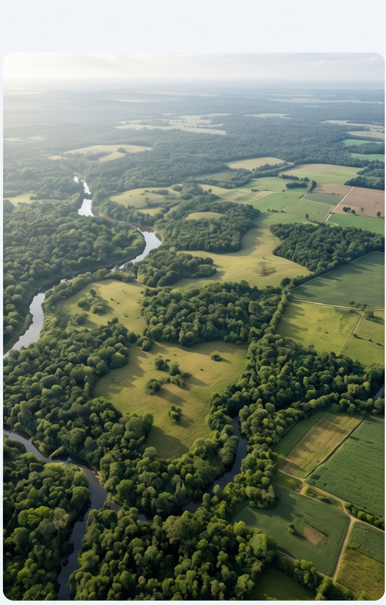

Explore our projects
Our study areas
Where we’ve worked
Ardhilytics’ project work spans a range of landscapes, communities, and use cases; from biodiversity assessments to land-use change modeling for long-term planning. Each marker on the map represents an active or completed project site.
Habitat assessment: Serengeti, Tanzania
Blue gam mapping: Kenya
LULC modeling and scenario planning: Narok, Kenya
Social-ecological assessment: Planning applications, Narok
Case studies
A closer look at our work

Biodiversity
Mapping Biodiversity in Narok County, Kenya
Geospatial Data Scientist and Landscape Ecologist specializing in arid and semi-arid landscape (ASAL) management, land-use modeling, and regenerative landscape science.

Biodiversity
Habitat Assessment for Southern Patas Monkey
Geospatial Data Scientist and Landscape Ecologist specializing in arid and semi-arid landscape (ASAL) management, land-use modeling, and regenerative landscape science.

Land-Use Change
LULC Change Modeling in Narok, Kenya
Geospatial Data Scientist and Landscape Ecologist specializing in arid and semi-arid landscape (ASAL) management, land-use modeling, and regenerative landscape science.

Land-Use Change
LULC Change Scenario Modeling for Planning
Geospatial Data Scientist and Landscape Ecologist specializing in arid and semi-arid landscape (ASAL) management, land-use modeling, and regenerative landscape science.
Have a landscape that needs a closer look?
Tell us what you’re trying to prove, protect, or plan for. Let us discuss which layers apply.